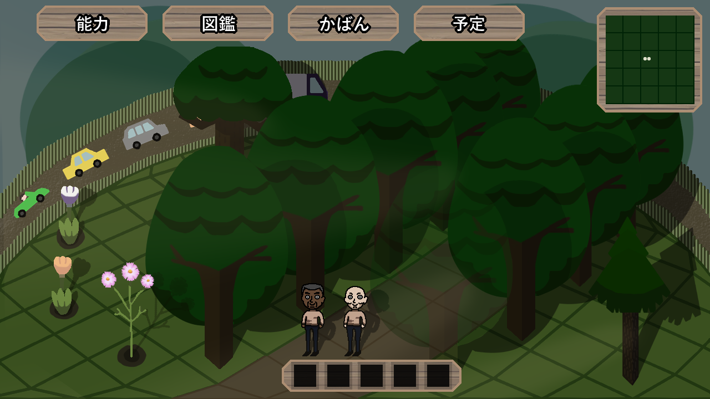
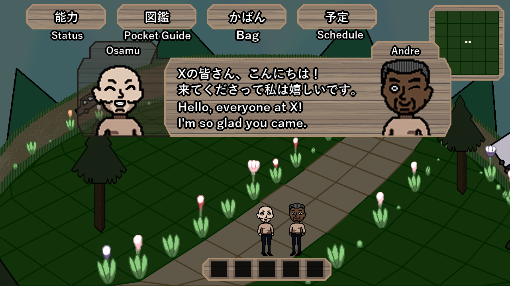
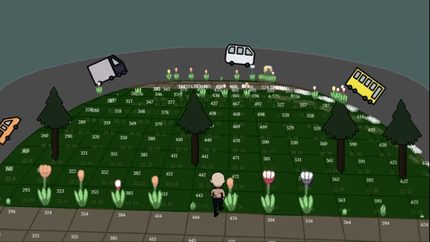
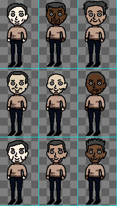
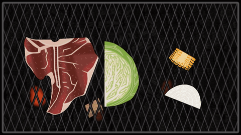
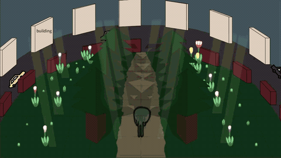
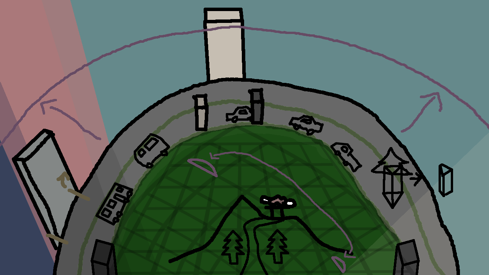
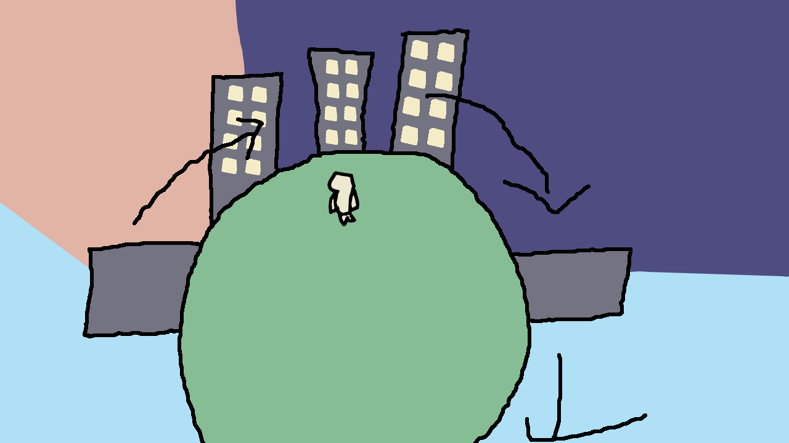

Wood and Flower DevLog
こちらのページは現在日本語しか対応してません。ご不便おかけします。
こちらは現在制作中のDevLogになります。不定期で更新です Wood and Flower Park
配色の変更 いろいろパラメータを弄って楽しかった 配色のお勉強をいろいろしました 具体的にはというと、明度３５パーと７０パーで色の見え方は変わるということです それからお勉強したことを活かしました 白から黒の彩度を一度灰色近くまで落として、上げる 色相については、全体のバランスを見つつ合わせました キャラクターと、マス目（グリッド）以外の輪郭線を大きく調整しました このメリットは多くあり、 作業の負担が減ることと、処理が軽くなり他に回せること、ナチュラルなグラフィックスになることです いずれ斧で木こりや、カマでお花摘みを考えてると、輪郭線は不要と判断しました
2026/10/24 花と木のオブジェクトの追加 今回は花と木をできるだけタイムラプスアニメーションを書きたいので、 かたまった時間の確保が必要かと それと今Xで作業進捗を報告しつつ、作業するという器用さ欲しいですけどなかなか難しいです 現在のプラン 月：作業予定の発表 水：進捗内容とスクリーンショット 金：週１でGIFアニメ ただあまりうまくいってないです。 もうちょっと自分に腕があったり、ゲームエンジンをしっかり作れてたら アニメーションや、オブジェクトの報告を定期的にできそうですが、 私はゲームデザインに興味があって、そこを大切にしすぎてるのでポストする内容が地味になってます 本音としましては、もうちょっと何本かリリースを出してみたいので 制作していたいという思いが強く出てるのかもしれません 修正のプラン1 月：開発者を和ます雑談 水：開発者に居心地のいい雑談 金：GIFアニメ公開 これならできそうです。ネタを思いつくかどうかですね 修正プラン2 月：なし 水：なし 金：GIFアニメ公開 これもいいのかな。ただこれですと、貴重な交流チャンスを逃す感じはありますね 2026/10/23 配色についてのお勉強。色を調べますと、ちょっと鮮やかな色みたいです シンプルに彩度を落とす。隣の色とのギャップで配色映えするように調整するとよさそうです 色を明るくしたり、暗くすると色の見え方が変わる。その時は色相を変えてみます これは影やライティングには特に使えますね 2026/10/22 UI2日目 ちょっと作業ゆっくりですが、今週は負担軽めに過ごしたいのでこれでよいと考えてます
2026/10/21 UIの制作開始 サプリを変えたためか、作業があまり進んでません 2026/10/20 森の配色 パレットを作る ワールド座標が変化されない不具合 チューリップの描画順の不具合 これはソートの問題なのかも 2026/10/19 キャラを中心に回転しなかった問題を解決 こんな感じで箱庭内をぐるぐる動くゲームです
2026/10/18 主人公のイラスト
2026/10/08 BBQ Test
2026/10/07 制作開始


2026/10/04
Home